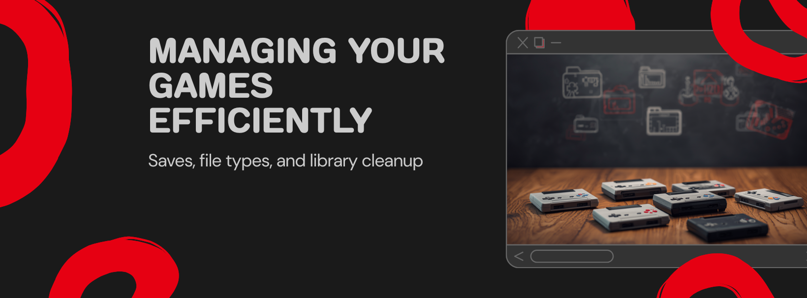

Managing Your Games
Now that your Switch is set up, here's how to keep your library tidy and your save progress safe. This section covers what to do after games are installed.
What's in this section:
- Deleting Games — three ways to remove a game (and updates / DLC separately)
- Game File Types — what XCI, NSP, NSZ actually mean
- Downloading Games — where to find files
- Save Data Management — back up, restore, transfer between Switches
Looking to install games instead? See the Install section.